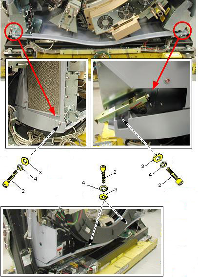
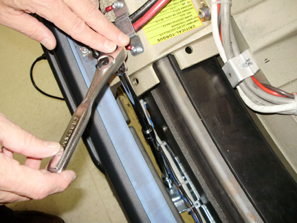

Operating Documentation
Direction 5193574-800, Rev# 22
LightSpeed 7.X Service Methods
Module Version 1.0, Version Date 10/28/08
Operating Documentation |
| Required Persons | Preliminary Reqs | Procedure | Finalization |
|---|---|---|---|
| 1 | Not Applicable | 10 mins | Not Applicable |
This procedure defines the steps to remove and reinstall the gantry tilting assembly bottom cover.
| Last Revised on: | October 1, 2008 |
| Item | Qty | Effectivity | Part# | Manufacturer | |
|---|---|---|---|---|---|
| 5 mm hex wrench | 1 | - | - | - | |
| 5 mm hex end socket | 1 | - | - | - | |
| 12 inch socket extension | 1 | - | - | - | |
| Condition | Reference | Effectivity |
|---|---|---|
Only trained service personnel should service the GE CT Scanner. | - | - |
This procedure assumes the side, top, front and rear gantry covers have already been removed. | - | - |
To remove the gantry tilting assembly bottom cover, remove the 4 M6 screws as follows. See Illustration 1 showing the location of the 4 screws to remove.
Loosen the bottom slip ring safety cover.
Using the 5 mm hex end socket and extension loosen the back two screws shown in Illustration 1 using the method shown in Illustration 2 between the slip ring and gantry frame.
Remove the front two screws shown in Illustration 1.
Illustration 1: Bottom cover

Illustration 2: Rear screw access

To reinstall the bottom cover, position the bottom cover and install the 4 screws as shown in Illustration 1 and Illustration 2 installing the front screws first.
Tighten all 4 bottom cover screws including slip ring bottom cover if loosened previously.
No finalization steps.